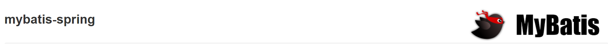
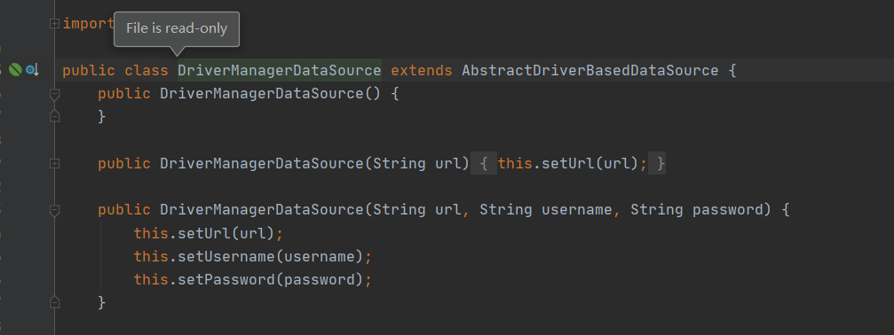
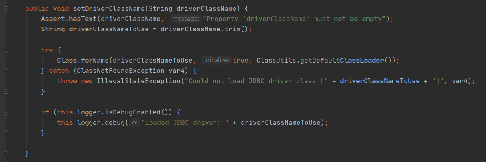
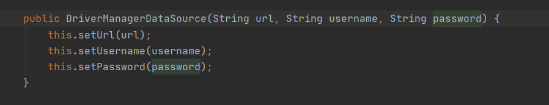
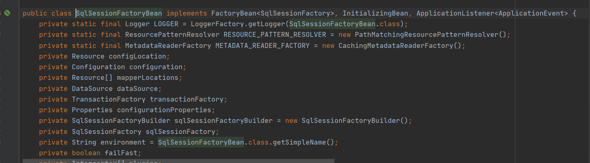
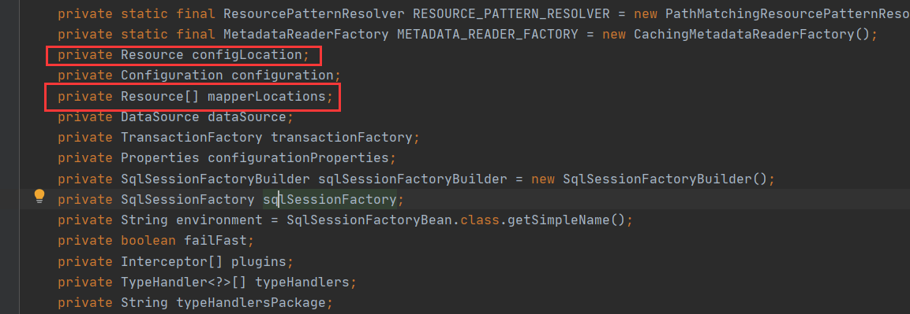
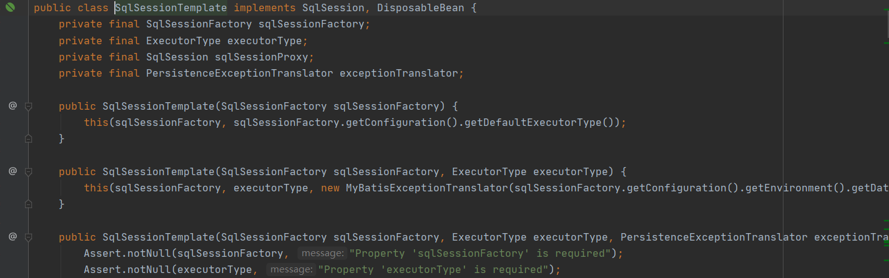
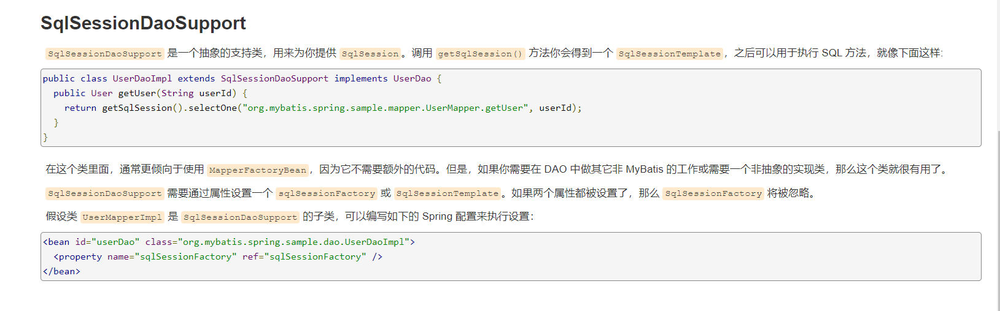

整合Mybatis
步骤
1. 导入相关jar包junit
<dependency>
<groupId>junit</groupId>
<artifactId>junit</artifactId>
<version>4.12</version>
</dependency>
mybatis
<dependency>
<groupId>org.mybatis</groupId>
<artifactId>mybatis</artifactId>
<version>3.5.2</version>
</dependency>
mysql-connector-java
<dependency>
<groupId>mysql</groupId>
<artifactId>mysql-connector-java</artifactId>
<version>5.1.47</version>
</dependency>
spring相关
<dependency>
<groupId>org.springframework</groupId>
<artifactId>spring-webmvc</artifactId>
<version>5.1.10.RELEASE</version>
</dependency>
<dependency>
<groupId>org.springframework</groupId>
<artifactId>spring-jdbc</artifactId>
<version>5.1.10.RELEASE</version>
</dependency>
aspectJ AOP 织入器
<!-- https://mvnrepository.com/artifact/org.aspectj/aspectjweaver -->
<dependency>
<groupId>org.aspectj</groupId>
<artifactId>aspectjweaver</artifactId>
<version>1.9.4</version>
</dependency>
mybatis-spring整合包 【重点】
<dependency>
<groupId>org.mybatis</groupId>
<artifactId>mybatis-spring</artifactId>
<version>2.0.2</version>
</dependency>
配置Maven静态资源过滤问题！
<build>
<resources>
<resource>
<directory>src/main/java</directory>
<includes>
<include>**/*.properties</include>
<include>**/*.xml</include>
</includes>
<filtering>true</filtering>
</resource>
</resources>
</build>
回忆Mybatis
编写pojo实体类
public class User {
private String username; //姓名
private String password; //密码
}
实现mybatis的配置文件
<?xml version="1.0" encoding="UTF-8" ?>
<!DOCTYPE configuration
PUBLIC "-//mybatis.org//DTD Config 3.0//EN"
"http://mybatis.org/dtd/mybatis-3-config.dtd">
<configuration>
<typeAliases>
<package name="com.lg.pojo"/>
</typeAliases>
<environments default="development">
<environment id="development">
<transactionManager type="JDBC"/>
<dataSource type="POOLED">
<property name="driver" value="com.mysql.cj.jdbc.Driver"/>
<property name="url" value="jdbc:mysql://localhost:3306/books?serverTimezone=GMT%2B8"/>
<property name="username" value="root"/>
<property name="password" value="123456"/>
</dataSource>
</environment>
</environments>
<mappers>
<package name="com.lg.dao"/>
</mappers>
</configuration>
UserDao接口编写
public interface UserMapper {
public List<User> selectUser();
}
接口对应的Mapper映射文件
<?xml version="1.0" encoding="UTF-8" ?>
<!DOCTYPE mapper
PUBLIC "-//mybatis.org//DTD Mapper 3.0//EN"
"http://mybatis.org/dtd/mybatis-3-mapper.dtd">
<mapper namespace="com.lg.dao.UserMapper">
<select id="selectUser" resultType="User">
select * from user
</select>
</mapper>
测试类
@Test
public void selectUser() throws IOException {
String resource = "mybatis-config.xml";
InputStream inputStream = Resources.getResourceAsStream(resource);
SqlSessionFactory sqlSessionFactory = new SqlSessionFactoryBuilder().build(inputStream);
SqlSession sqlSession = sqlSessionFactory.openSession();
UserMapper mapper = sqlSession.getMapper(UserMapper.class);
List<User> userList = mapper.selectUser();
for (User user: userList){
System.out.println(user);
}
sqlSession.close();
}
Mybatis-Spring学习
引入Spring之前需要了解mybatis-spring包中的一些重要类；

官方文档：http://mybatis.org/spring/zh/index.html
什么是 MyBatis-Spring？
MyBatis-Spring 会帮助你将 MyBatis 代码无缝地整合到 Spring 中。
知识基础
在开始使用 MyBatis-Spring 之前，你需要先熟悉 Spring 和 MyBatis 这两个框架和有关它们的术语。这很重要
MyBatis-Spring 需要以下版本：
| MyBatis-Spring | MyBatis | Spring 框架 | Spring Batch | Java |
|---|---|---|---|---|
| 2.0 | 3.5+ | 5.0+ | 4.0+ | Java 8+ |
| 1.3 | 3.4+ | 3.2.2+ | 2.1+ | Java 6+ |
如果使用 Maven 作为构建工具，仅需要在 pom.xml 中加入以下代码即可：
<dependency>
<groupId>org.mybatis</groupId>
<artifactId>mybatis-spring</artifactId>
<version>2.0.2</version>
</dependency>
要和 Spring 一起使用 MyBatis，需要在 Spring 应用上下文中定义至少两样东西：一个 SqlSessionFactory 和至少一个数据映射器类。
在 MyBatis-Spring 中，可使用SqlSessionFactoryBean来创建 SqlSessionFactory。要配置这个工厂 bean，只需要把下面代码放在 Spring 的 XML 配置文件中：
<bean id="sqlSessionFactory" class="org.mybatis.spring.SqlSessionFactoryBean">
<property name="dataSource" ref="dataSource" />
</bean>
注意：SqlSessionFactory需要一个 DataSource（数据源）。这可以是任意的 DataSource，只需要和配置其它 Spring 数据库连接一样配置它就可以了。
在基础的 MyBatis 用法中，是通过 SqlSessionFactoryBuilder 来创建 SqlSessionFactory 的。而在 MyBatis-Spring 中，则使用 SqlSessionFactoryBean 来创建。
在 MyBatis 中，你可以使用 SqlSessionFactory 来创建 SqlSession。一旦你获得一个 session 之后，你可以使用它来执行映射了的语句，提交或回滚连接，最后，当不再需要它的时候，你可以关闭 session。
SqlSessionFactory有一个唯一的必要属性：用于 JDBC 的 DataSource。这可以是任意的 DataSource 对象，它的配置方法和其它 Spring 数据库连接是一样的。
一个常用的属性是 configLocation，它用来指定 MyBatis 的 XML 配置文件路径。它在需要修改 MyBatis 的基础配置非常有用。通常，基础配置指的是 < settings> 或 < typeAliases>元素。
需要注意的是，这个配置文件并不需要是一个完整的 MyBatis 配置。确切地说，任何环境配置（
SqlSessionTemplate 是 MyBatis-Spring 的核心。作为 SqlSession 的一个实现，这意味着可以使用它无缝代替你代码中已经在使用的 SqlSession。
模板可以参与到 Spring 的事务管理中，并且由于其是线程安全的，可以供多个映射器类使用，你应该总是用 SqlSessionTemplate 来替换 MyBatis 默认的 DefaultSqlSession 实现。在同一应用程序中的不同类之间混杂使用可能会引起数据一致性的问题。
可以使用 SqlSessionFactory 作为构造方法的参数来创建 SqlSessionTemplate 对象。
<bean id="sqlSession" class="org.mybatis.spring.SqlSessionTemplate">
<constructor-arg index="0" ref="sqlSessionFactory" />
</bean>
现在，这个 bean 就可以直接注入到你的 DAO bean 中了。你需要在你的 bean 中添加一个 SqlSession 属性，就像下面这样：
public class UserDaoImpl implements UserDao {
private SqlSession sqlSession;
public void setSqlSession(SqlSession sqlSession) {
this.sqlSession = sqlSession;
}
public List<User> searchUser() {
UserMapper mapper = sqlSession.getMapper(UserMapper.class);
return mapper.searchUser();
}
}
按下面这样，注入 SqlSessionTemplate：
<bean id="userDao" class="org.mybatis.spring.sample.dao.UserDaoImpl">
<property name="sqlSession" ref="sqlSession" />
</bean>
整合实现一
1、引入Spring配置文件beans.xml
<?xml version="1.0" encoding="UTF-8"?>
<beans xmlns="http://www.springframework.org/schema/beans"
xmlns:xsi="http://www.w3.org/2001/XMLSchema-instance"
xsi:schemaLocation="http://www.springframework.org/schema/beans
http://www.springframework.org/schema/beans/spring-beans.xsd">
2、配置数据源替换mybaits的数据源
<!--配置数据源：数据源有非常多，可以使用第三方的，也可使使用Spring的-->
<bean id="dataSource" class="org.springframework.jdbc.datasource.DriverManagerDataSource">
<property name="driverClassName" value="com.mysql.cj.jdbc.Driver"/>
<property name="url" value="jdbc:mysql://localhost:3306/books?serverTimezone=GMT%2B8"/>
<property name="username" value="root"/>
<property name="password" value="123456"/>
</bean>



3、配置SqlSessionFactory，关联MyBatis
<!--配置SqlSessionFactory-->
<bean id="sqlSessionFactory" class="org.mybatis.spring.SqlSessionFactoryBean">
<property name="dataSource" ref="dataSource"/>
<!--关联Mybatis-->
<property name="configLocation" value="classpath:mybatis-config.xml"/>
<property name="mapperLocations" value="classpath:com/lg/dao/*.xml"/>
</bean>


4、注册sqlSessionTemplate，关联sqlSessionFactory；
<!--注册sqlSessionTemplate , 关联sqlSessionFactory-->
<bean id="sqlSession" class="org.mybatis.spring.SqlSessionTemplate">
<!--利用构造器注入-->
<constructor-arg index="0" ref="sqlSessionFactory"/>
</bean>

5、增加Dao接口的实现类；私有化sqlSessionTemplate
public class UserMapperImpl implements UserMapper{
private SqlSessionTemplate sqlSession;
public void setSqlSession(SqlSessionTemplate sqlSession) {
this.sqlSession = sqlSession;
}
public List<User> searchUser() {
UserMapper mapper = sqlSession.getMapper(UserMapper.class);
return mapper.searchUser();
}
}
6、注册bean实现
<bean id="UserMapper" class="com.lg.dao.UserDaoImpl">
<property name="sqlSession" ref="sqlSession"/>
</bean>
7、测试
@Test
public void test2(){
ApplicationContext context = new ClassPathXmlApplicationContext("beans.xml");
UserMapper mapper = (UserMapper) context.getBean("UserMapper");
List<User> user = mapper.searchUser();
System.out.println(user);
}
结果成功输出！现在我们的Mybatis配置文件的状态！都可以被Spring整合！
<?xml version="1.0" encoding="UTF-8" ?>
<!DOCTYPE configuration
PUBLIC "-//mybatis.org//DTD Config 3.0//EN"
"http://mybatis.org/dtd/mybatis-3-config.dtd">
<configuration>
<typeAliases>
<package name="com.lg.pojo"/>
</typeAliases>
</configuration>
整合实现二
mybatis-spring1.2.3版以上的才有这个 .
官方文档截图 :
dao继承Support类 , 直接利用 getSqlSession() 获得 , 然后直接注入SqlSessionFactory . 比起方式1 , 不需要管理SqlSessionTemplate , 而且对事务的支持更加友好 . 可跟踪源码查看

测试：
将我们上面写的UserDaoImpl修改一下
public class UserDaoImpl extends SqlSessionDaoSupport implements UserMapper { public List<User> searchUser() { UserMapper mapper = getSqlSession().getMapper(UserMapper.class); return mapper.searchUser(); } }修改bean的配置
<bean id="userDao" class="com.lg.dao.UserDaoImpl"> <property name="sqlSessionFactory" ref="sqlSessionFactory" /> </bean>测试
@Test public void test2(){ ApplicationContext context = new ClassPathXmlApplicationContext("beans.xml"); UserMapper mapper = (UserMapper) context.getBean("userMapper"); List<User> user = mapper.searchUser(); System.out.println(user); }
总结
总结 : 整合到spring以后可以完全不要mybatis的配置文件，除了这些方式可以实现整合之外，我们还可以使用注解来实现，这个等我们后面学习SpringBoot的时候还会测试整合！
转载请注明来源，欢迎对文章中的引用来源进行考证，欢迎指出任何有错误或不够清晰的表达。可以在下面评论区评论，也可以邮件至 1589631311@qq.com